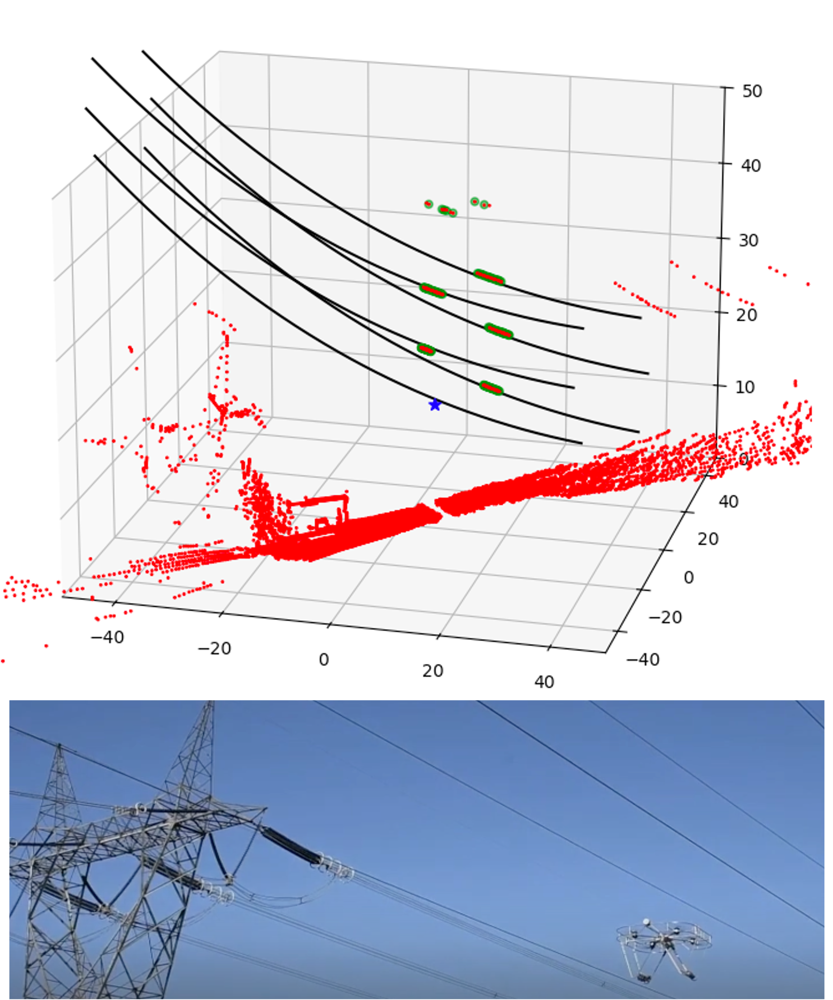

Abstract
This article explores using a non-linear programming approach to estimate the position of overhead power lines in real-time using a LiDAR sensor mounted on a drone. The method is based on a geometric model of the power line, which allows for efficient estimation even in challenging conditions such as occlusions or noise.
Publications & Resources
📄 Article (arXiv): A. Girard, S. A. Parkison and P. Hamelin, "Model-Based Real-Time Pose and Sag Estimation of Overhead Power Lines Using LiDAR for Drone Inspection," 2025.
📄 Article (IEEE CASE 2025): A. Girard, S. A. Parkison and P. Hamelin, "Model-Based Real-Time Pose and Sag Estimation of Overhead Power Lines Using LiDAR for Drone Inspection," in 2025 IEEE 21st International Conference on Automation Science and Engineering (CASE), pp. 2469–2476.
💻 Code (GitHub): Open source estimation library in Python
📓 Code (Colab): Colab page for reproducing the simulation results
Project Media
Video presentation

Concept